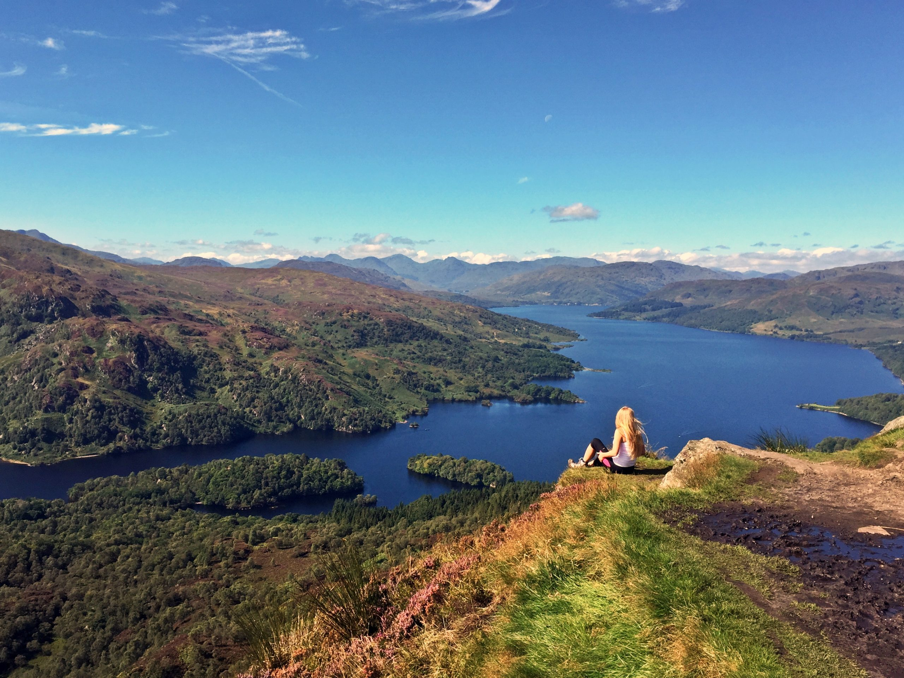

Ben A'an is one of the most popular amongst Scotland's smaller hills. Often known as the mountain in miniature, its position at the heart of the Trossachs makes it a truly wonderful viewpoint. The car park quickly becomes full on sunny weekends in summer. [More info]
